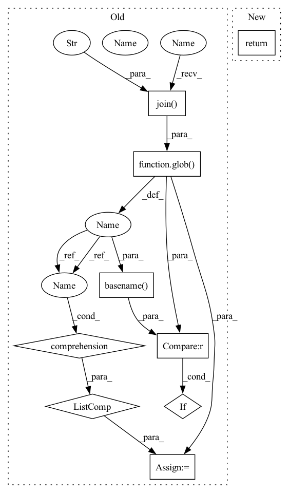

Pattern ID :38660

Before Change
class ImagenetTxtImporter(Importer):
@classmethod
def find_sources(cls, path):
subset_paths = [p for p in glob(osp.join(path, "*.txt"))
if osp.basename(p) != ImagenetTxtPath.LABELS_FILE]
sources = []
for subset_path in subset_paths:
sources += cls._find_sources_recursive(
subset_path, ".txt", "imagenet_txt")
After Change
class ImagenetTxtImporter(Importer):
@classmethod
def find_sources(cls, path):
return cls._find_sources_recursive(path, ".txt", "imagenet_txt",
file_filter=lambda p: \
osp.basename(p) != ImagenetTxtPath.LABELS_FILE)
In pattern: SUPERPATTERN
Frequency: 3
Non-data size: 9
Instances
Fragment ID: 110618514
Project Name: openvinotoolkit/datumaro
Commit Name: 96444260ba94434d732c47473e70b2503bad6c51
Time: 2021-01-15
Author: maxim.zhiltsov@intel.com
File Name: datumaro/plugins/imagenet_txt_format.py
M Class Name: ImagenetTxtImporter
N Class Name: ImagenetTxtImporter
M Method Name: find_sources(2)
N Method Name: find_sources(2)
M Parent Class: Importer
N Parent Class: Importer
M File Name: datumaro/plugins/imagenet_txt_format.py
N File Name: datumaro/plugins/imagenet_txt_format.py
M Start Line: 75
M End Line: 81
N Start Line: 75
N End Line: 77
'>
Before Change
class CamvidImporter(Importer):
@classmethod
def find_sources(cls, path):
subset_paths = [p for p in glob(osp.join(path, "**.txt"), recursive=True)
if osp.basename(p) != CamvidPath.LABELMAP_FILE]
sources = []
for subset_path in subset_paths:
sources += cls._find_sources_recursive(
subset_path, ".txt", "camvid")
After Change
class CamvidImporter(Importer):
@classmethod
def find_sources(cls, path):
return cls._find_sources_recursive(path, ".txt", "camvid",
file_filter=lambda p: osp.basename(p) != CamvidPath.LABELMAP_FILE)
'>
Fragment ID: 110618513
Project Name: openvinotoolkit/datumaro
Commit Name: 96444260ba94434d732c47473e70b2503bad6c51
Time: 2021-01-15
Author: maxim.zhiltsov@intel.com
File Name: datumaro/plugins/camvid_format.py
M Class Name: CamvidImporter
N Class Name: CamvidImporter
M Method Name: find_sources(2)
N Method Name: find_sources(2)
M Parent Class: Importer
N Parent Class: Importer
M File Name: datumaro/plugins/camvid_format.py
N File Name: datumaro/plugins/camvid_format.py
M Start Line: 194
M End Line: 200
N Start Line: 194
N End Line: 195
'>
Before Change
if not osp.isdir(task_path):
continue
task_subsets = [p for p in glob(osp.join(task_path, "*.txt"))
if "_" not in osp.basename(p)]
subset_paths += [(task, extractor_type, p) for p in task_subsets]
return subset_paths
After Change
root_path = osp.dirname(osp.dirname(
osp.dirname(task_subsets[0]["url"])))
return subsets
class VocClassificationImporter(VocImporter):
_TASK = VocTask.classification
'>
Fragment ID: 110618512
Project Name: openvinotoolkit/datumaro
Commit Name: 839ca35beaf8e5f11efcb86d9cfd03c693d8b9bb
Time: 2021-06-09
Author: maxim.zhiltsov@intel.com
File Name: datumaro/plugins/voc_format/importer.py
M Class Name: VocImporter
N Class Name: VocImporter
M Method Name: find_sources(2)
N Method Name: find_sources(2)
M Parent Class: Importer
N Parent Class: Importer
M File Name: datumaro/plugins/voc_format/importer.py
N File Name: datumaro/plugins/voc_format/importer.py
M Start Line: 61
M End Line: 77
N Start Line: 51
N End Line: 75